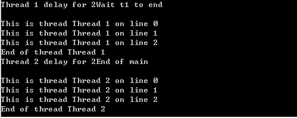
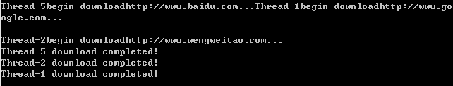

Python具有非常丰富的库，这篇文章介绍了常用库的使用和技巧。
建议36：掌握字符串的基本用法
有个小技巧：
s = ('SELECT *'
'FROM atable '
'WHERE afield="value"')
s
'SELECT *FROM atable WHERE afield="value"'
以上利用了Python遇到未闭合的小括号时会自动将多行代码拼接为一行和把相邻的两个字符串字面量拼接在一起的特性做到的。（而如果使用三个引号会把换行符和空格都当做字符串的一部分）
Python字符串分为str和unicode两种。当需要判断变量是否为字符串时，应该使用
isinstance(s, basestring)
Python提供了很多判定字符串的函数如：
- isalnum()
- isalpha()
- isdigit()
- islower()
- isupper()
- isspace()
- istitle() 首字母大写
- startswith(prefix, start, end)
- endswith
查找和替换：
- count(sub, start, end )
- find 找不到返回-1
- index 找不到返回ValueError
- rfind
- rindex
- replace(old, new, count) 最多替换count次。
分切与连接：
- partition(seq), rpartition, : 返回一个3个元素的元组对象。sep左端，sep，sep右端
- splitlines
- split(sep, maxsplit), rsplit
需要注意split()与split(' ')不同
In [3]: ' hello world!'.split
Out[3]: ['hello', 'world!']
In [5]: ' hello world!'.split(' ')
Out[5]: ['', 'hello', '', '', 'world!']
变形：
- lower()
- upper()
- capitalize()
- swapcase()
- title()
填充：
- center 居中
- ljust 左对齐
- rjust 右对齐)
- zfill 字符0填充
- expandtabs 制表符替换为适当数量的空格
建议37：按需选择sort()或者sorted()
1.相比sort, sorted()的使用更为广泛。
sorted(iterable, cmp, key, reverse)
s.sort(cmp, key, reverse)
cmp：用户定义的任何比较函数，函数的参数为两个可比较的元素（来自iterable或者list），返回-1, 0, 1，当第一个参数小于第二个参数则返回负数。 key：带一个参数的函数，用来为每个元素提取比较值，默认为None reverse：排序结果是否反转
sorted可以作用于任意迭代对象，而sort()一般作用于列表。如sort((1,3,2))就抛出异常。
2.当排序对象为列表时，二者适合的场景不同。
sorted 返回一个排序后的列表，原有列表保持不变；而sort直接修改原有的列表，函数返回为None。 sort函数不需要复制原有列表，消耗内存较少，效率也比较高。
3.传入参数key比参数cmp效率高。
In [15]: from timeit import Timer
In [16]: Timer(stmt="sorted(xs, key=lambda x:x[1])", setup="xs=range(100);xs=zip
(xs,xs);").timeit(10000) # 比较x[1]位置的值
Out[16]: 0.18814091348924744
In [17]: zip(range(10),range(10))
Out[17]:
[(0, 0),
(1, 1),
(2, 2),
(3, 3),
(4, 4),
(5, 5),
(6, 6),
(7, 7),
(8, 8),
(9, 9)]
In [18]: Timer(stmt="sorted(xs, cmp=lambda a,b: cmp(a[1],b[1]))", setup="xs=rang
e(100);xs=zip(xs,xs);").timeit(10000) # 比较x[1]位置的值 cmp(x,y)当x < y - > -1
Out[18]: 0.2789308104491681
4.sorted功能非常强大，可以方便对不同数据结构进行排序。
①对字典进行排序。
In [19]: phonebook = {'Linda': '7750', 'Bob': '9345', 'Carol': '5834'}
In [20]: from operator import itemgetter
In [21]: sorted_pb = sorted(phonebook.iteritems(), key=itemgetter(1))
In [22]: sorted_pb
Out[22]: [('Carol', '5834'), ('Linda', '7750'), ('Bob', '9345')]
itemgetter获得指定位置的值。
②多维list排序。对多个字段进行排序。
In [23]: gameresult = [['Bob', 95.00, 'A'], ['Alan',86.0,'C'], ['Mandy', 82.5,'A
'], ['Rob', 86, 'E']]
In [24]: sorted(gameresult, key = itemgetter(2,1))
Out[24]:
[['Mandy', 82.5, 'A'],
['Bob', 95.0, 'A'],
['Alan', 86.0, 'C'],
['Rob', 86, 'E']]
先按等级，等级相同则按照分数高低排序。
③字典中混合list排序。 字典中的key或者值为列表，需要对列表中的某个位置的元素进行排序。
In [25]: mydict = { 'Li': ['M',7],
....: 'Zhang': ['E',2],
....: 'Weng': ['W',1]}
In [27]: sorted(mydict.iteritems(), key=lambda(k,v): itemgetter(1)(v))
Out[27]: [('Weng', ['W', 1]), ('Zhang', ['E', 2]), ('Li', ['M', 7])]
iteritems()返回的是（k，v），传入到函数中; itemgetter(1)(v)取得v的第一个元素。
>>> itemgetter(1)('ABCDEFG')
'B'
>>> itemgetter(1,3,5)('ABCDEFG')
('B', 'D', 'F')
>>> itemgetter(slice(2,None))('ABCDEFG')
'CDEFG'
④List中混合字典排序 列表中每一个元素都为字典，需要针对字典的多个key值进行排序。
In [36]: gameresult = [{"name":"Bob", "wins":10, "losses":3, "rating":75.00},
....: {"name":"wwt", "wins":99, "losses":0, "rating":100.0}]
In [37]: sorted(gameresult, key=itemgetter("rating","name"))
Out[37]:
[{'losses': 3, 'name': 'Bob', 'rating': 75.0, 'wins': 10},
{'losses': 0, 'name': 'wwt', 'rating': 100.0, 'wins': 99}]
按key为rating、name排序
建议38：使用copy模块深拷贝对象
In [38]: import copy
In [39]: a = [1,2,3]
In [40]: b = a #浅拷贝
In [41]: b[0] = 4
In [42]: b
Out[42]: [4, 2, 3]
In [43]: a
Out[43]: [4, 2, 3]
In [44]: c = copy.deepcopy(a) #深拷贝
In [49]: c[1] = 5
In [50]: a
Out[50]: [4, 2, 3]
In [51]: c
Out[51]: [4, 5, 3]
浅拷贝仅仅拷贝了对象的地址而不对对应地址所指向的具体内容进行拷贝。
建议39：使用Counter进行计数统计
计数统计有多重方法如：
- 使用dict
- 使用defaultdict
- 使用set和list
some_data = [...]
count_set = set(some_data)
count_list = []
for item in count_set:
countlist.append((item,some_data.count(item)))
set.count()
还有更优雅地就是使用collections.Counter：
In [52]: from collections import Counter
In [53]: some_data = [2,3,4,5,656,43,2]
In [54]: print Counter(some_data)
Counter({2: 2, 3: 1, 4: 1, 5: 1, 43: 1, 656: 1})
使用elements可以获取key值：
In [56]: list(Counter(some_data).elements())
Out[56]: [2, 2, 3, 4, 5, 43, 656]
使用most_common找出前N个频率最高的元素：
In [57]: Counter(some_data).most_common(3)
Out[57]: [(2, 2), (3, 1), (4, 1)]
当访问不存在的元素时，返回的是0，而不是KeyError:
(Counter(some_data)['a'])
0
update和subtract:
In [58]: c = Counter("success")
In [59]: print c
Counter({'s': 3, 'c': 2, 'e': 1, 'u': 1})
In [60]: c.update("sucessfully") # 累加而不是替换
In [61]: c
Out[61]: Counter({'s': 6, 'c': 3, 'u': 3, 'e': 2, 'l': 2, 'f': 1, 'y': 1})
In [63]: c.subtract("successfully")
In [64]: c
Out[64]: Counter({'s': 3, 'c': 1, 'e': 1, 'u': 1, 'f': 0, 'l': 0, 'y': 0})
关于Counter的更深入应用，可以阅读我的另一篇文章。
建议40：深入掌握ConfigParser
配置文件的意义在于用户不需要修改代码，就可以改变应用程序的行为。 ConfigParser有几个地方需要提一下：
-
getboolean函数，根据一定的规则将配置项的值转换为布尔值。 [section1] option1=0 当调用getboolean('section1','option1')时，返回的值是False。
-
配置项的查找规则。 有一个[DEFAULT]节，当读取的配置项不在指定的节里时，会在[DEFAULT]节中查找。
-
支持字符串格式化的类似语法
cat format.conf
[DEFAULT]
conn_str = %(dnb)s://%(user)s:%(pw)s@%(host)s:%(port)s/%s(db)s
dbn = mysql
user = root
host = localhost
port = 3306
[db1]
user = aaa
pw = ppp
db = exmaple
[db2]
user = bbb
pw = ccc
db = example
import ConfigParser
conf = ConfigParser.ConfigParser()
conf.read('foramt.conf')
print conf.get('db1','conn_str')
以上配置可以根据不同配置获取不同数据库配置相应的连接字符串。
建议41：使用argparse处理命令行参数
Pythonista有好几种方案，标准库中留下来的getopt, optparse和argparse。 其中argparse是最强大的。
In [65]: import argparse
In [66]: parser = argparse.ArgumentParser()
In [67]: parser.add_argument('-o','--output')
Out[67]: _StoreAction(option_strings=['-o', '--output'], dest='output', nargs=No
ne, const=None, default=None, type=None, choices=None, help=None, metavar=None)
In [68]: parser.add_argument('-v',dest='verbose',action='store_true')
Out[68]: _StoreTrueAction(option_strings=['-v'], dest='verbose', nargs=0, const=
True, default=False, type=None, choices=None, help=None, metavar=None)
In [69]: args = parser.parse_args()
In [70]: args
Out[70]: Namespace(output=None, verbose=False)
现在又出现了docopt，比argparse更先进更易用的命令行参数处理器。（但是，还不是标准库的一部分）
建议42：使用pandas处理大型CSV文件
CSV(Comma Seperated Values)作为一种逗号分隔型值的纯文本格式文件，实际中经常用到。Python提供了处理csv的API：
1.reader( csvfile, dialect='excel', fmtparam ) 用于csv文件的读取，返回reader对象。当dialect设置为excel时，默认Dialect值如下：
class excel(Dialect):
delimiter = ',' # 单个字符，用于分隔字段，常见的有, | ;
quotechar = '"' # 用于对特殊符号加引号
doublequote = True # quotechar出现时候表现形式
skipinitialspace = False # true是delimiter后面的空格会忽略
lineterminator = '\r\n' #行结束符
quoting = QUOTE_MINIMAL # 是否在字段前加引号
2.csv.writer(csvfile, dialect=‘excel’, **fmtparams)用于写入CSV文件，参数同上。
3.csv.DictReader(csvfile, fieldnames=None, restkey=None, restval=None, dialect="excel", args, *kwds) 同reader方法类似，不同的是把信息映射到一个字典中去。
4.csv.DictWriter(csvfile, fieldnames, restval='', extrasaction='raise', dialect='excel', args, *kwds)用于支持字典写入。
CSV模块使用非常方便(import csv)，但如果要处理的CSV文件大小上百MB或者几个GB，那么csv模块就应付不来了。 下面做一个实验，临时创建一个1GB的CSV文件并将其加载到内存中：
In [13]: f = open('large.csv','wb')
In [14]: f.seek(1073741824-1) # 创建大文件的技巧
In [15]: f.write("\0")
In [16]: f.close()
In [17]: import os
In [18]: os.stat("large.csv").st_size
Out[18]: 1073741824L
In [19]: with open("large.csv","rb") as csvfile:
....: mycsv = csv.reader(csvfile,delimiter=';')
....: for row in mycsv:
....: print row
....:
运行后会出现MemoryError。
所以应该使用pandas。其支持两种数据结构——Series和DataFrame是数据处理的基础。
- Series:是一种类似数组的带索引的一维数据结构。通过obj.values()和obj.index()可以分别获取值和索引。
- DataFrame：类似一个二维数据结构，支持行和列的索引。
pandas中处理csv文件的函数主要为read_csv()和to_csv()，前者读取csv文件内容并返回DataFrame,后者则相反。 ①可以指定读取部分列和文件的行数 ②设置CSV文件与excel兼容 ③对文件进行分块处理并返回一个可迭代的对象 ④当文件格式相似的时候，支持多个文件合并处理。
pandas处理非常灵活，而且底层使用Cython实现速度较快，在专业的数据处理与分析领域，如金融等行业已经得到广泛应用。
建议43：一般情况下使用ElementTree解析XML
xml.dom.minidom和xml.sax是Python解析XML文件最为人们熟知的两个模块了。从Python2.5开始ElementTree成为标准模块，cElementTree是Cython实现，速度更快，消耗内存更少，实际使用应尽量使用cElementTree. 具有以下特性：
- 使用简单。每一个元素的属性以字典形式表示
- 内存消耗明显低于DOM解析。避免将整个XML文件加载到内存中
- 支持XPath查询
如果XML文件在GB级别，那么第三方的lxml是更好的选择。
ElementTree主要方法：
- getroot()
- find(match)
- findall(match)
- findtext(match, default=None)
- iter(tag)
import xml.etree.ElementTree as ET
tree = ET.ElementTree(file="test.xml")
root = tree.getroot()
print root
print root.tag
for i in root.findall("system/purpose")
print i.text
建议44：理解模块pickle优劣
序列化的场景很常见：
- 在磁盘上保存当前程序的状态数据以便重启的时候能够重新加载
- 多用户或者分布式操作系统中数据结构的网络传输时，可以将数据序列化后发送给一个可信网络对端，接收后反序列化后恢复相同的对象。
- session和cache的存储等。
序列化：简单地说就是把内存中数据结构在不丢失其身份和类型信息的情况下转成对象的文本或者二进制表示的过程。对象序列化后的形式经过反序列化过程应该能够恢复为原有的对象。 Python有很多支持序列化的模块，如pickle，json，marshal和shelve等。
pickle是最通用的序列化模块。它的C语言实现为cPickle，其速度为pickle的1000倍。 pickle最主要的两个函数时dump()和load()，分别进行序列化和反序列化。
pickle.dump(obj, file, protocol )序列化数据到一个文件描述符，obj表示需要序列化的对象 load(file): 反序列化。
In [20]: import cPickle as pickle
In [21]: my_data = {"name": "Python", "type": "Language", "version": "2.7.5"}
In [22]: fp = open("picklefile.dat","wb") # 打开要写入的文件
In [23]: pickle.dump(my_data, fp)
In [24]: fp.close()
In [25]: fp = open("picklefile.dat","rb")
In [26]: out = pickle.load(fp)
In [27]: print out
{'version': '2.7.5', 'type': 'Language', 'name': 'Python'}
In [28]: fp.close()
pickle具有的特性：
- 接口简单，容易使用。dump和load
- 存储格式具有通用性。能够被不同平台的Python解析器共享。
- 支持数据类型广泛
- pickle模块式可以扩展的。对于不可序列化的对象，如sockets、文件句柄、数据库连接等，可以通过特殊方法__getstate__()和__setstate__()来返回实例在被pickle时的状态。
- 能够自动维护对象间的引用。
In [29]: a = ['a','b']
In [30]: b = a
In [31]: b.append('c')
In [32]: b
Out[32]: ['a', 'b', 'c']
In [33]: a
Out[33]: ['a', 'b', 'c']
In [34]: p = pickle.dumps((a,b))
In [35]: a1, b1 = pickle.loads(p)
In [36]: a1
Out[36]: ['a', 'b', 'c']
In [37]: b1
Out[37]: ['a', 'b', 'c']
In [38]: a1.append('d') # 反序列化后对a1对象的修改仍然会影响到b1
In [39]: b1
Out[39]: ['a', 'b', 'c', 'd']
pickle也有一些限制： - 不能保证操作的原子性。也就是说pickle调用中如果发生异常， 可能部分数据已经保存。 - pickle存在安全性问题。pickle.loads('cmd') - pickle协议是Python特定的，不同语言兼容性难以保证。
建议45：序列化的另一个不错的选择——JSON
Python有一系列模块提供对JSON格式的支持，如simplejson, cjson, yajl, ujson, 2.6后又引入了标准库JSON。cjson是用C语言实现，yajl是Cython版本的JSON实现。 simplejson与标准库JSON的区别不大，但更新可能更快，在实际使用中将这两者结合采用如下的import方法：
try:
import simplejson as json
except ImportError:
import json
JSON的常用方法与pickle类似，dump/dumps序列化，load/loads反序列化。
相比pickle，json具有以下优势：
- 使用简单，支持多种数据类型。
- 名称/ 值对的集合
- 值的有序列表
- 存储格式可读性更为友好，容易修改。dumps函数提供了一个参数indent使生成的json文件可读性更好，0意味着每个值单独一行；大于0的数字表示使用这个数字的空格来缩进嵌套结构。但这个是以文件大小变大为代价的。
- json支持跨平台跨语言操作，能够轻易被其他语言解析。
- 具有较强的扩展性。提供了编码(JSONEncoder)和解码类（JSONDecoder）以便用户对其默认不支持的序列化类型进行扩展。
但是Python中标准模块json的性能比pickle稍逊。性能要求高的话，还是选择cPickle。
建议46：使用traceback获取栈信息
traceback会输出完整的栈信息，有利于开发人员快速找到异常发生时的现场信息。 tracback.print_exc()打印出：错误类型，错误对应的值已经具体的trace信息，包括文件名、具体行号、函数名已经对应的代码。
import traceback
gList = ['a','b','c','d','f','g','e']
def f():
gList[5]
return g()
def g():
return h()
def h():
del gList[2]
return i()
def i():
gList.append('i')
print gList[7]
if __name__ == '__main__':
try:
f()
except IndexError as ex:
print 'sorry, out of range'
print ex
traceback.print_exc()
输出结果：
sorry, out of range
list index out of range
Traceback (most recent call last):
File "trace_back.py", line 17, in <module>
f()
File "trace_back.py", line 5, in f
return g()
File "trace_back.py", line 7, in g
return h()
File "trace_back.py", line 10, in h
return i()
File "trace_back.py", line 13, in i
print gList[7]
IndexError: list index out of range
建议47：使用logging记录日志信息
仅仅将栈信息输出到控制台远远不够，更为常见的做法是使用日志保存程序运行过程中的相关信息，如运行时间、描述信息以及错误或者异常发生时候的特定上下文信息。Python自带了logging模块提供了日志功能。
logger分为5个级别，包含4个主要对象：
- logger：程序信息输出的接口，分散在不同代码中，使得程序可以再运行的时候记录相应的信息，并根据设置的日志级别或者filter来决定哪些信息需要输出，并将这些信息方法到其关联的handler。
- handler。处理信息的输出，可以输出到控制台、文件或者网络。
- Formatter。决定log信息的格式
- Filter。决定哪些信息需要输出。
下面是一个使用logging的例子：
import traceback
import sys
import logging
gList = ['a','b','c','d','f','g','e']
logging.basicConfig( # configure log output formatter
level = logging.DEBUG,
filename = 'log.txt',
filemode = 'w',
format = '%(asctime)s %(filename)s[line:%(lineno)d] %(levelname)s %(message)s',)
def f():
gList[5]
logging.info('[INFO]:calling method g() in f()') # normal message
return g()
def g():
return h()
def h():
del gList[2]
return i()
def i():
gList.append('i')
print gList[7]
if __name__ == '__main__':
logging.debug('Information during calling f():')
try:
f()
except IndexError as ex:
print 'sorry, out of range'
#traceback.print_exc()
ty,tv,tb = sys.exc_info()
logging.error("[ERROR]:Sorry,Exception occured.")
logging.critical('object info:%s' % ex)
logging.critical('Error Type:{0}, Error information:{1}'.format(ty,tv))
logging.critical(''.join(traceback.format_tb(tb)))
sys.exit(1)
输出log到log.txt，内容如下：
2014-12-11 20:50:55,684 trace_back.py[line:25] DEBUG Information during calling f():
2014-12-11 20:50:55,684 trace_back.py[line:13] INFO [INFO]:calling method g() in f()
2014-12-11 20:50:55,684 trace_back.py[line:32] ERROR [ERROR]:Sorry,Exception occured.
2014-12-11 20:50:55,684 trace_back.py[line:33] CRITICAL object info:list index out of range
2014-12-11 20:50:55,684 trace_back.py[line:34] CRITICAL Error Type:<type 'exceptions.IndexError'>, Error information:list index out of range
2014-12-11 20:50:55,684 trace_back.py[line:35] CRITICAL File "trace_back.py", line 27, in <module>
f()
File "trace_back.py", line 14, in f
return g()
File "trace_back.py", line 16, in g
return h()
File "trace_back.py", line 19, in h
return i()
File "trace_back.py", line 22, in i
print gList[7]
建议48：使用threading模块编写多线程程序
GIL(Global Interpreter Lock)全局解释器锁，是解释器用于同步线程的工具，使得任何时候只有一个线程在运行。GIL的存在使得Python多线程编程暂时无法利用多处理器的优势。但这不意味着我们要放弃多线程。 对于纯Python的代码也许使用多线程不能提高运行效率，但是以下几种情况，多线程仍然是比较好的解决方案：
- 等待外部资源返回
- 建立反应灵活的用户界面
- 多用户应用程序
Python为多线程编程提供了两个模块：
- thread
- threading
thread模块提供了多线程的底层支持模块，以低级方式来处理和控制线程，使用起来较为复杂； threading模块基于thread进行封装，将线程操作对象化，在语言层面提供了丰富的特性。 因此，实际使用中推荐优先使用threading模块，因为：
- threading对同步原语的支持更为完善和丰富。如有Lock指令锁，还支持条件变量condition、信号量Semaphore等。
- threading模块在主线程与子线程的交互上更为友好。threading中的join()方法能够阻塞当前上下文环境的线程，直到调用此方法的线程终止或者到达指定的timeout。利用该方法可以方便地控制主线程与子线程以及子线程之间的执行。
import threading, time, sys
class test(threading.Thread):
def __init__(self, name, delay):
threading.Thread.__init__(self)
self.name = name
self.delay = delay
def run(self):
print '%s delay for %s' % (self.name, self.delay)
time.sleep(self.delay)
c = 0
while 1:
print 'This is thread %s on line %s' % (self.name, c)
c = c + 1
if c == 3:
print 'End of thread %s' % self.name
break
t1 = test('Thread 1', 2)
t2 = test('Thread 2', 2)
t1.start()
print 'Wait t1 to end'
t1.join()
t2.start()
print 'End of main'
运行结果： 
主线程main上使用t1的join()方法，主线程会等待t1结束后才继续运行后面的语句。线程t2的启动在join语句之后，t2一直等到t1退出后才会开始运行。
thread模块不支持守护进程。thread模块在主线程退出后，所有的主线程无论是否还在工作，都会被强制结束。threading模块，支持守护进程，可以通过setDaemon()来设定线程的daemon属性，当daemon属性为True时，表面主线程的退出可以不用等待子线程的完成（默认为False，即所有子线程结束后主线程才会结束）
import threading
import time
def myfunc(a, delay):
print 'I will calculate square of %s after delay for %s' % (a,delay)
time.sleep(delay)
print 'calculate begins...'
result = a*a
print result
return result
t1 = threading.Thread(target=myfunc, args=(2,5))
t2 = threading.Thread(target=myfunc, args=(6,8))
print t1.isDaemon()
print t2.isDaemon()
t2.setDaemon(True)
t1.start()
t2.start()
运行结果：

建议49：使用Queue使多线程编程更安全
线程间的同步互斥，线程间数据的共享等这些都是涉及线程安全要考虑的问题。
Python中的Queue提供了三种队列：
- Queue.Queue(maxsize)。FIFO
- Queue.LifoQueue(maxsize)
- Queue.PriorityQueue(maxsize)。优先级队列
这三种队列支持以下几种方法：
- Queue.qsize()
- empty()
- full()
- put(item, block, timeout ):往队列中添加item元素，block为False的时候，若队列满则抛出Full异常，若block为True，则队列满一直等待有空位置，知道timeout时间后抛出异常。
- put_nowait(item): 相当于block为False的put方法
- get(block, timeout ): 与put类似的用法
- get_nowait()
- task_done()：发送信号表面入列任务已经完成，经常在消费者线程中使用
- join()：阻塞直到队列中所有元素处理完毕
Queue实现了多个生产者和多个消费者的队列，当多线程之间需要信息安全交换的时候特别有用。 需要注意的是Queue与collections.deque中的队列是不同的，前者主要用于不同线程之间的通信，它内部实现了线程的锁机制；而后者是数据结构上的概念。
例子：
import os
import Queue
import threading
import urllib2
class DownloadThread(threading.Thread):
def __init__(self, queue):
threading.Thread.__init__(self)
self.queue = queue
def run(self):
while True:
url = self.queue.get()
print self.name + "begin download" + url + "..."
self.download_file(url)
self.queue.task_done()
print self.name + " download completed!"
def download_file(self,url):
urlhandler = urllib2.urlopen(url)
fname = os.path.basename(url)+".html"
with open(fname, "wb") as f:
while True:
chunk = urlhandler.read(1024)
if not chunk: break
f.write(chunk)
if __name__ == '__main__':
urls = ["http://www.baidu.com",
"http://www.google.com",
"http://www.wengweitao.com"
]
queue = Queue.Queue()
for i in range(5):
t = DownloadThread(queue)
t.setDaemon(True)
t.start()
for url in urls:
queue.put(url)
# wait for the queue to finish
queue.join()
结果：

Read from《编写高质量代码：改善Python程序的91个建议》
Comments